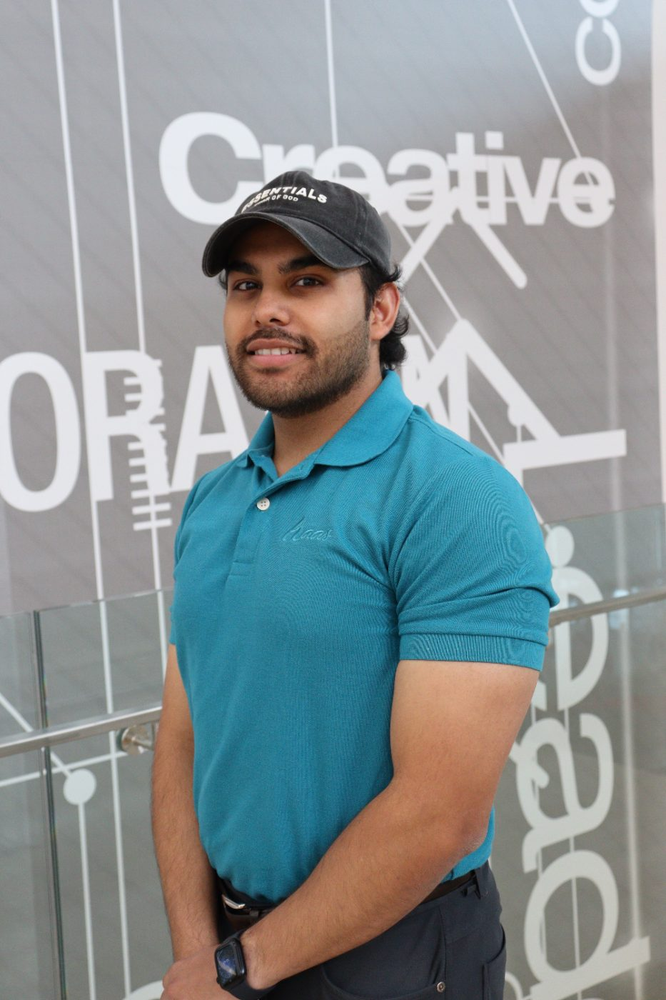
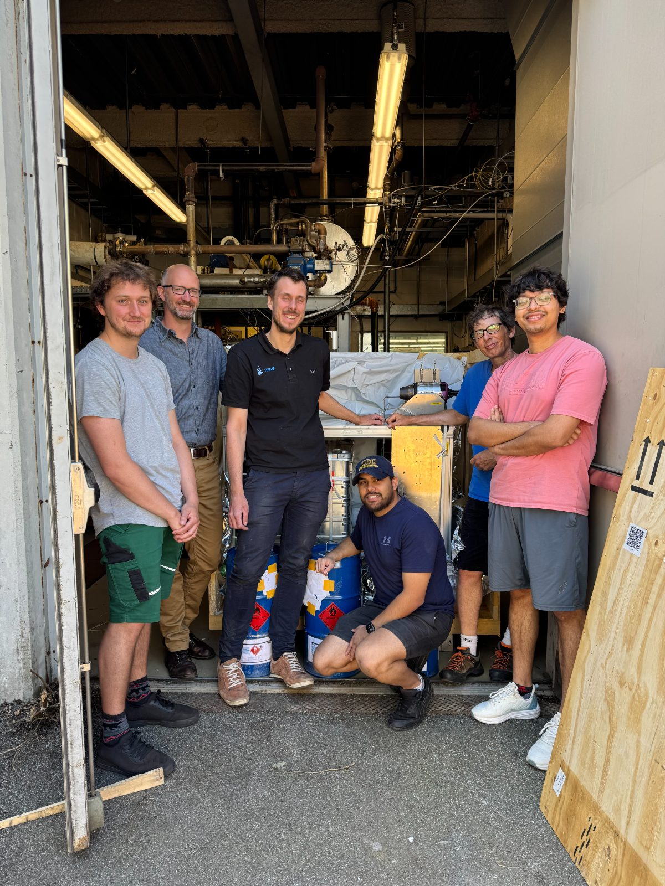
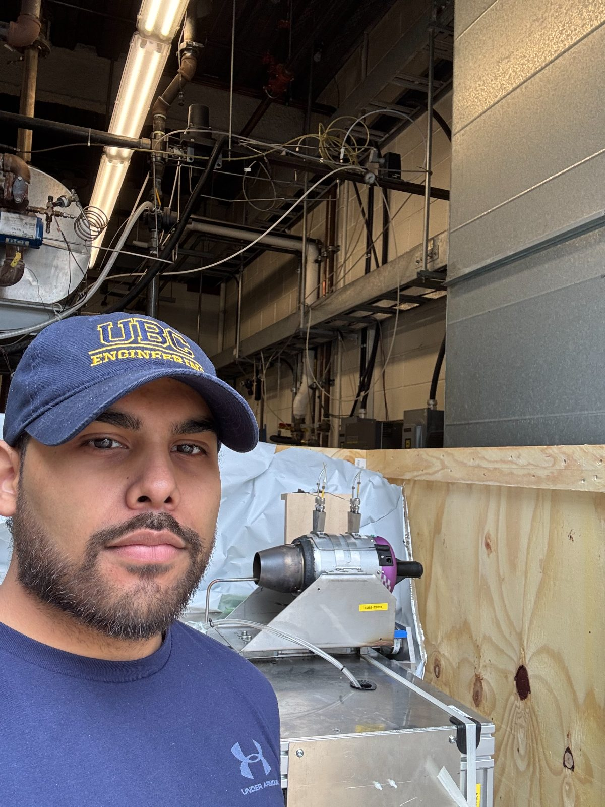
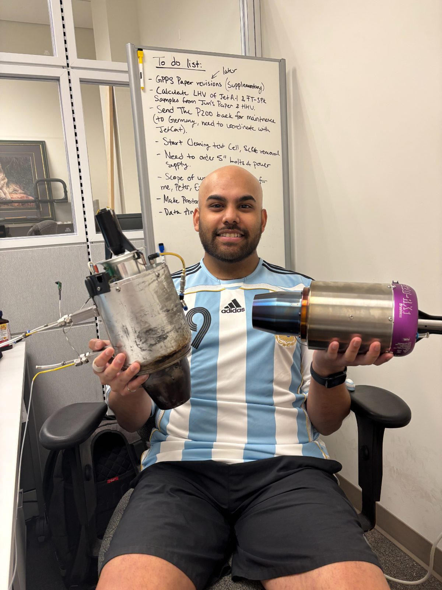
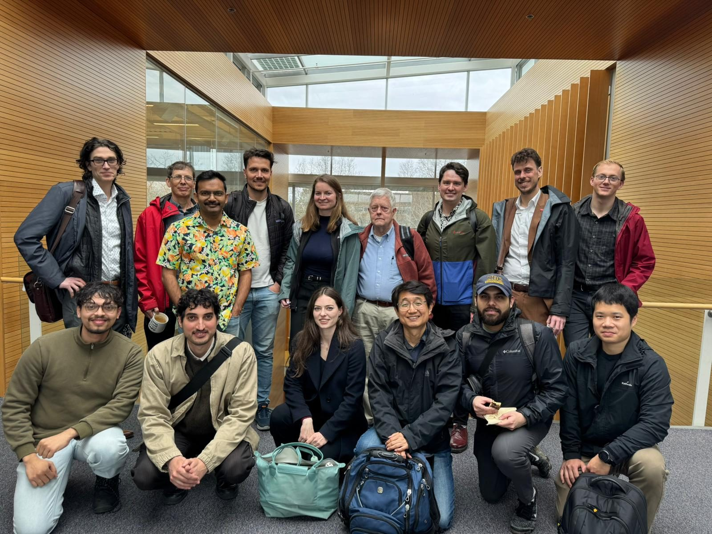

01
Micro-Turbojet Testing
Repeatable, back-to-back engine tests in a controlled test cell.
I am a MASc student in Mechanical Engineering at UBC and expect to finish in summer 2027. My graduate research is experimental. I run a micro-turbojet on conventional and sustainable jet fuels, measuring its performance, gaseous emissions and particles. I also study turbulence and reacting flows independently.

Testing jet fuels in a small engine.
I commissioned a JetCat P200-SX micro-turbojet test rig at UBC’s Clean Energy Research Centre. A small engine is cheap to run, and I can test fuels back to back under the same conditions. At maximum thrust, its combustor-inlet temperature and pressure are close to those of a V2500 turbofan at idle.
I measure thrust, fuel flow, temperatures, pressures, gas emissions and particle size distributions. Our partners at TU Braunschweig use these data to calibrate and test a chemical reactor network model of the combustor.
| Max spool speed | 112,000 rpm |
| Max thrust (rated) | 230 N |
| Overall pressure ratio | ≈ 4 |
| Air mass flow (rated) | 0.45 kg/s |
| Fuel flow at max thrust (measured) | 0.0101–0.0103 kg/s |
| Fuels tested | Jet A-1 · FT-SPK |
These projects cover engine tests, transient modeling, aerosol measurements and the test facility. Each project page explains the methods, evidence and limitations.



Repeatable, back-to-back engine tests in a controlled test cell.
How sustainable fuels change gas and particle emissions.
Reactor-network models of the combustor, calibrated and tested with our engine data.
How results from a small engine relate to a full-scale turbofan.
Soot particle size distributions, with loss corrections for the sampling line.
Turbulent combustion, combustor–turbine interaction, contrail formation and drop-in alternative aviation fuels.
JET-CALF studies how fuels and lubricants affect aircraft emissions and contrails. The program brings together UBC, TU Braunschweig, Tampere University and Sungkyunkwan University. I lead the micro-turbojet task, planning and running engine tests and measuring performance and gas emissions on the P200-SX.

I want to understand how changes in jet fuel affect the flow and particles after combustion. One direction follows changes in mixing and heat release through the combustor to the turbine inlet. The other asks how sustainable fuels affect exhaust particles in the young plume, where some become contrail ice. In both, I would use measurements to constrain the models.